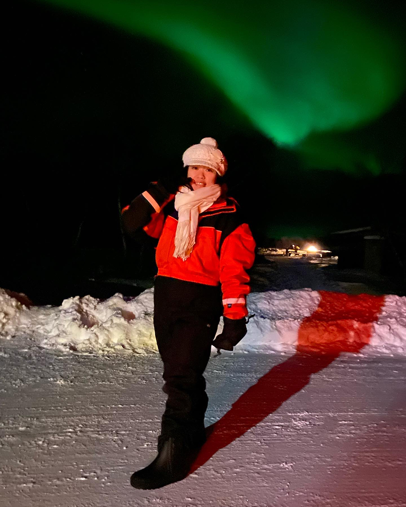
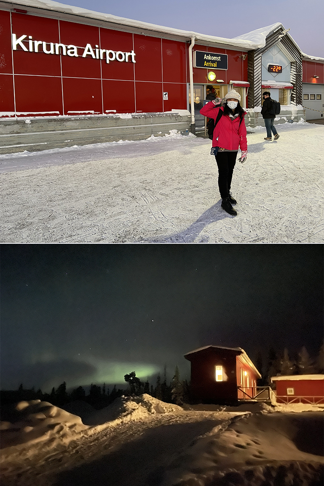
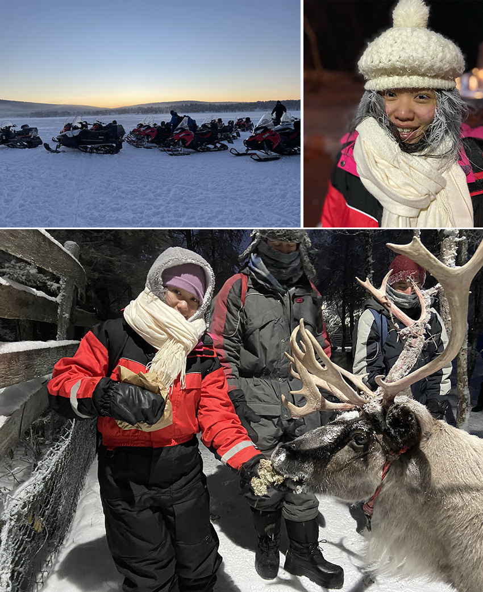
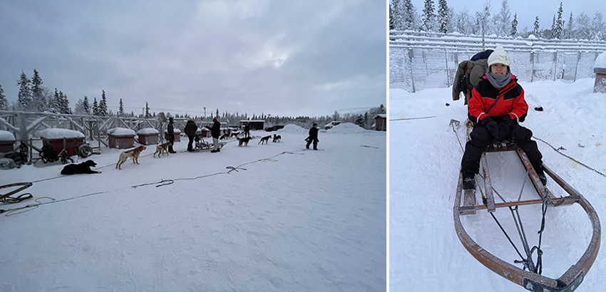
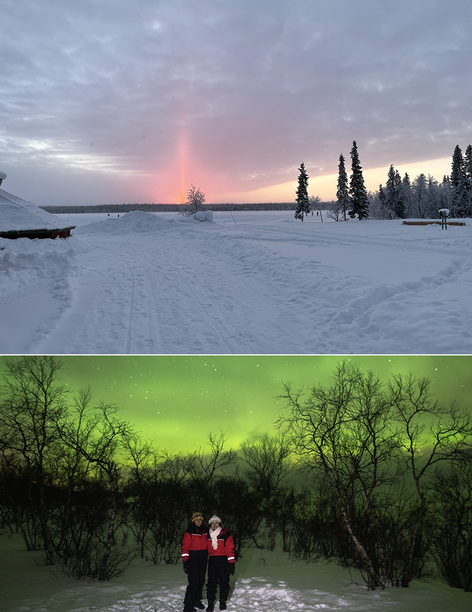

作為一名在瑞典的交換學生，最令我印象深刻的就是前往觀賞極光的旅程。起初，沒有特別規劃在學期中前往，心想著都沒有時間讀書了，如何還有時間去旅遊呢？好在有一群外國朋友鼓勵我趁著年輕，既然都到了瑞典就把握機會前往吧！有了他們的陪伴，我在二十一歲時完成了我人生清單上的一項。
|  |
在旅行社的引領下，我們離開哥德堡，乘坐六小時的夜班巴士前往斯德哥爾摩。接著搭乘飛機前往Kiruna，進入北極圈。降落後的第一站我們來到了當地唯一一間的超市，並購買這四天所需的物資。由於之後都沒有機會再來到超市，且每餐都需要自己烹飪，所以在有限的一小時中，我與我的美國朋友Jamie討論並迅速裝滿了兩輛手推車。當我們抵達住宿地點時，夜晚已然降臨，伴隨著零下25度嚴寒氣溫，我們在室外等待拿雪靴，但在沒有特別的防寒裝備下等待了半個小時後差點凍傷了腳，進入室內查看腳已然呈現慘白的顏色。然而，當我們穿上雪靴走出房子時，驚喜從天而降，我們被第一晚壯觀的極光驚艷了。興奮情緒隨之攀升，儘管最初對於嚴寒天氣的挫敗感，我們覺得這一切都是值得的，因為我們來到這裡見證這美麗的風景。
|  |
第二天，我們騎上雪地摩托車踏上了一段穿越白雪覆蓋的廣闊風景的旅程，並在著名的Ice hotel和Sami village中停留。即使穿了兩層雪手套，我們仍然無法承受外面嚴寒的氣息。一查看天氣後，我們才意識到今天是近一個月最寒冷的一天，溫度達到攝氏零下四十度。在雪地上以每小時八十公里的速度行駛，若是有任何沒有保護的部位，都會立刻遭受凍傷。我們聽說有法國的一位小哥，因為沒有保護到鼻子，凍傷到差一點可以移動他的鼻子，幸運的是，Jamie帶了手部暖暖包，讓我們在騎雪地摩托車時不會失去手指的感覺。然而，正是生活在如此極端的寒冷中，讓我們捕捉到了令人驚嘆的景色，以及體驗餵養馴鹿，甚至體驗到了頭髮和眉毛凍結的感覺。
|  |
第三天，我們體驗了狗拉雪橇的刺激感，學習了如何裝備狗和駕駛雪橇，感受到被精力充沛的哈士奇拉著穿越雪地時的腎上腺素飆升。我們甚至扔熱水，看著它變成雪，這是一個我們永遠不會忘記的神奇現象。然而這裡的日照時間僅有短短的三小時，當我們前往Abisko國家公園已然天黑一片，我們圍著火爐看著極光在天空中跳舞，這是一種人生的美妙享受，但每當我們脫下手套拍攝美麗的風景照片時，感覺就像在折磨我們的手，我們必須在一分鐘內迅速把手套戴回去，否則有凍傷的風險。接著，我們目睹了國家公園裡結凍的冰川奇觀與冰河像海浪一樣波動的美景。
|  |
在最後一天，我們參加了瘋狂的北極活動。我們穿上泳裝跳進冰湖裡，這是一次考驗我們極限的體驗。此行令人難以忘懷，包括觀看極光、體驗狗拉雪橇和在零下溫度下游泳。儘管我們體驗到比上一團還要嚴寒的天氣，但我們幾乎每天都能看到北極光。內心覺得還是要趁著年輕來一趟極光之旅，一般來說，北極圈的氣溫不適合人類居住，40歲以上的居民很少見。我們是通過學校安排的旅行社來到這裡，還年輕的時候就擁有了這種體驗。這使我們對大自然的美麗和居住在北極圈人們的韌性有了難忘的體會。
|  |